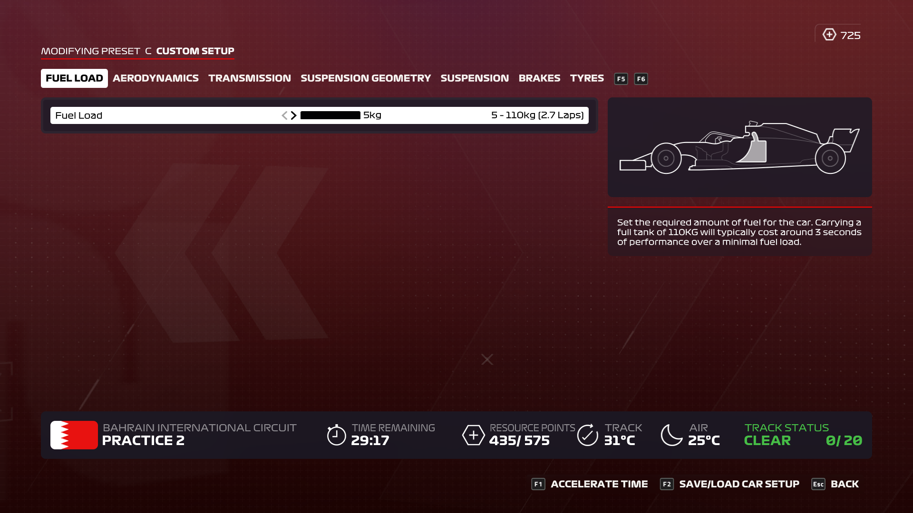

F1 셋업에 대해서 배워 보아요!
- Fuel Laod(기름)
- Aerodynamics(윙)
- Transmission(트렌스미션)
- Suspension Geometry(서스펜션 지오메트리)
- Suspension(서스펜션)
- Brakes(브레이크)
- Tyres(타이어)

Fuel Load
Fuel Load 페이지는 기름을 얼마나 채울 것인가를 물어보는 부분입니다.
주로 Qualifying(예선)때 셋업 창에서 찾아볼 수 있는데
가장 빠른 기록을 세워야 하므로 최솟값인 5L를 많이 넣습니다.
하지만 상황에 따라 트랙에 따라 더 많은 양을 넣어야 할 수 있습니다.